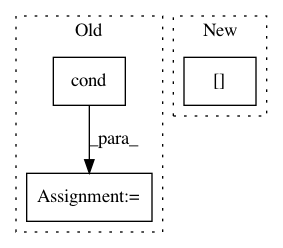

eae6badd524c2c9c52c84c0ef3be6e6745a83bdd,scipy/linalg/_matfuncs_inv_ssq.py,,fractional_matrix_power,#Any#Any#,641
Before Change
return np.linalg.matrix_power(A, int(p))
p1 = p - np.floor(p)
p2 = p - np.ceil(p)
k2 = np.linalg.cond(A)
if p1 * k2 ** (1 - p1) <= -p2 * k2:
a = int(np.floor(p))
b = p1
else:
After Change
if not s[-1]:
return np.zeros_like(A)
// Compute the condition number relative to matrix inversion.
k2 = s[0] / s[-1]
p1 = p - np.floor(p)
p2 = p - np.ceil(p)
if p1 * k2 ** (1 - p1) <= -p2 * k2:
In pattern: SUPERPATTERN
Frequency: 4
Non-data size: 3
Instances
Project Name: scipy/scipy
Commit Name: eae6badd524c2c9c52c84c0ef3be6e6745a83bdd
Time: 2013-06-20
Author: argriffi@ncsu.edu
File Name: scipy/linalg/_matfuncs_inv_ssq.py
Class Name:
Method Name: fractional_matrix_power
Project Name: calico/basenji
Commit Name: 6b5e5027e4ebc7bb09df3520704f44edb929c86d
Time: 2018-08-12
Author: drk@calicolabs.com
File Name: basenji/augmentation.py
Class Name:
Method Name: augment_stochastic_rc
Project Name: tryolabs/luminoth
Commit Name: c5a085fb3709aebb1d99a27fce9700961fa8fd83
Time: 2017-09-05
Author: iangtayler@gmail.com
File Name: luminoth/datasets/object_detection_dataset.py
Class Name: ObjectDetectionDataset
Method Name: _augment
Project Name: tryolabs/luminoth
Commit Name: 5ab5db26ff2cf0f09804b34b5533c8d59f53667b
Time: 2017-06-29
Author: javirey@gmail.com
File Name: frcnn/rcnn.py
Class Name: RCNN
Method Name: loss